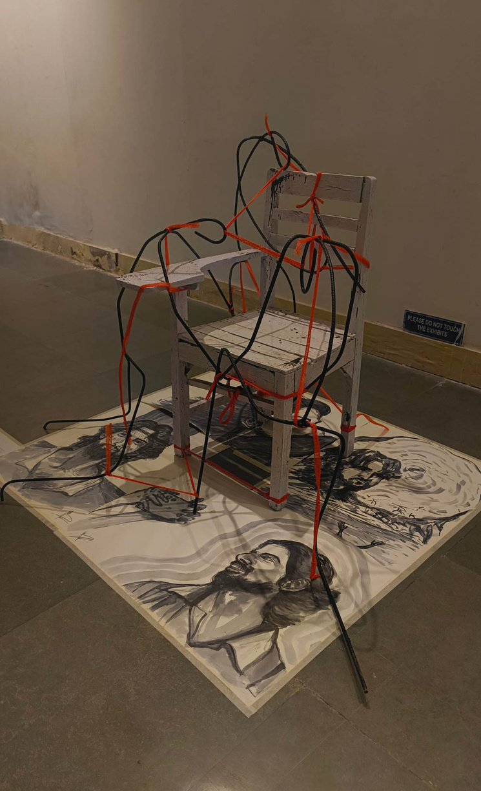
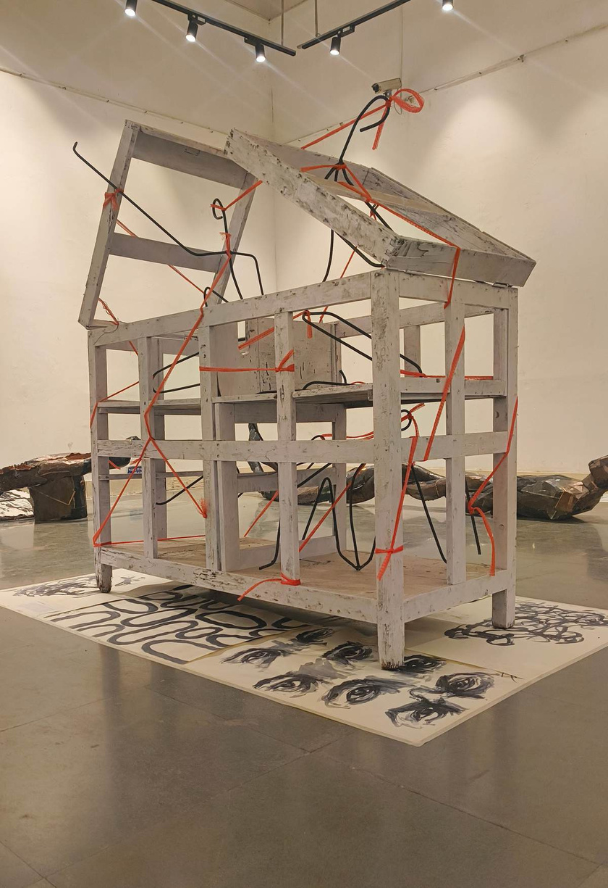
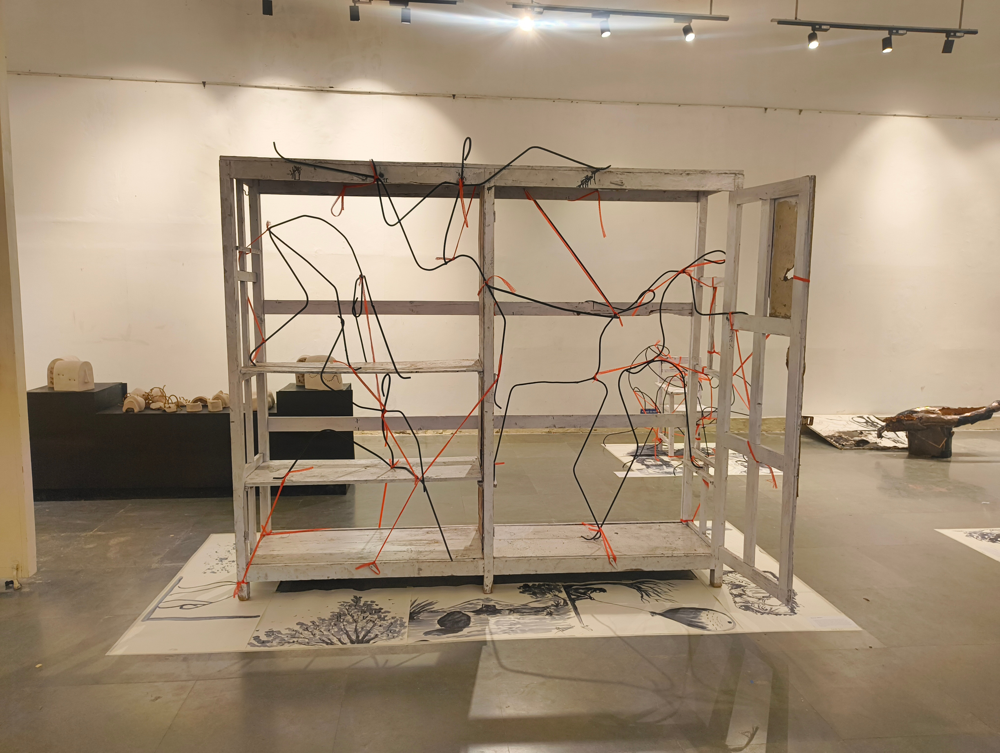
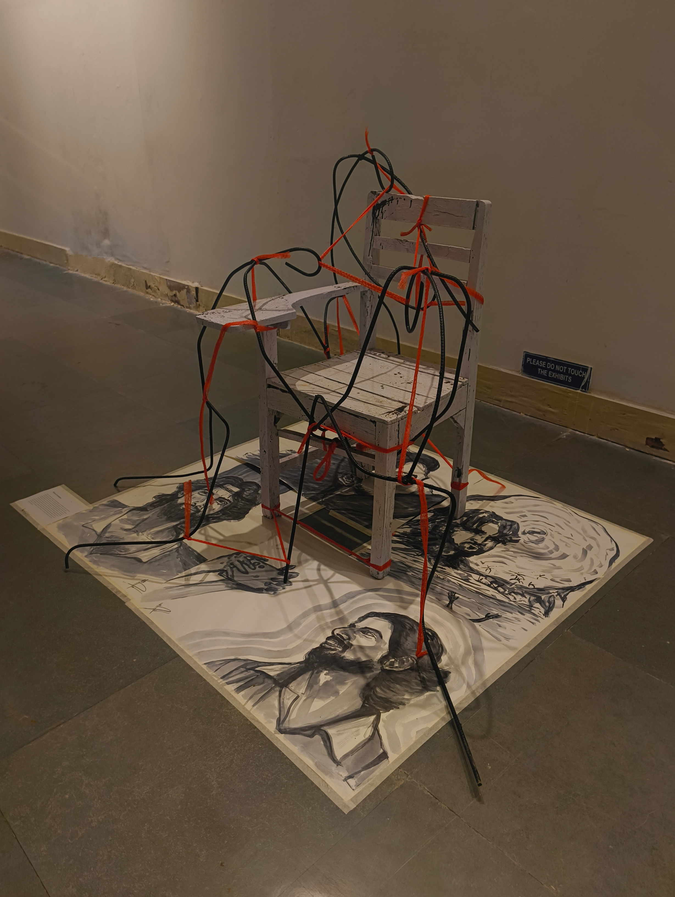
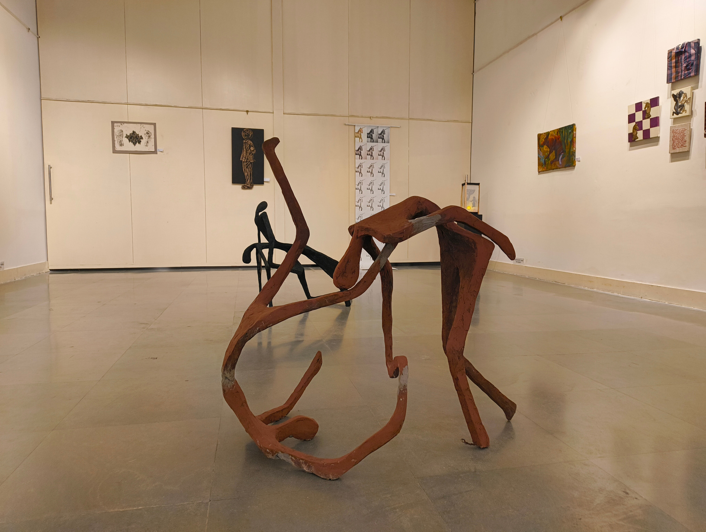
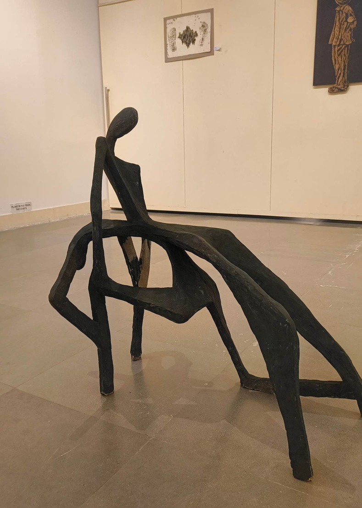
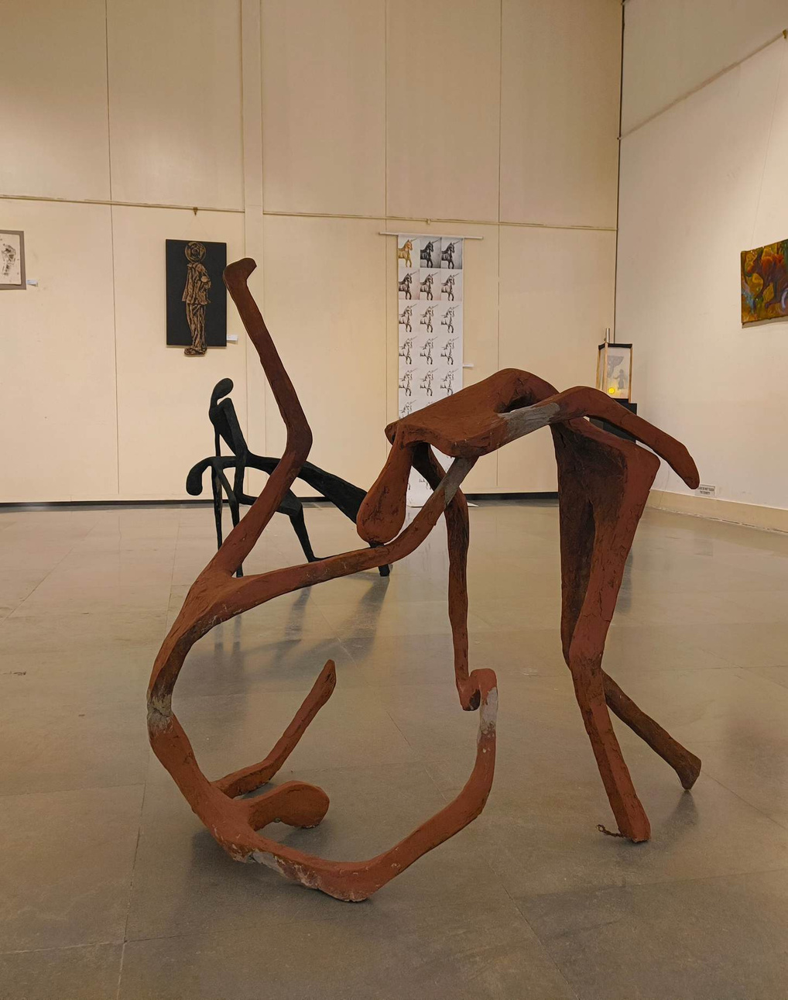
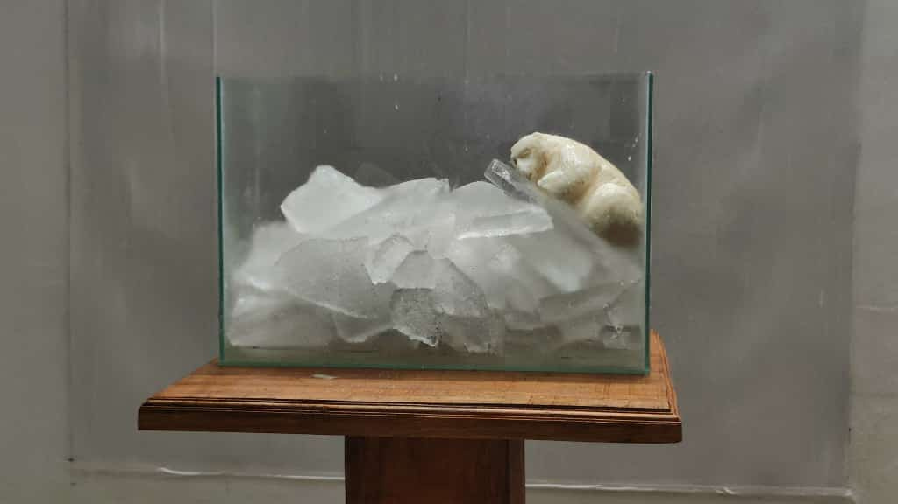
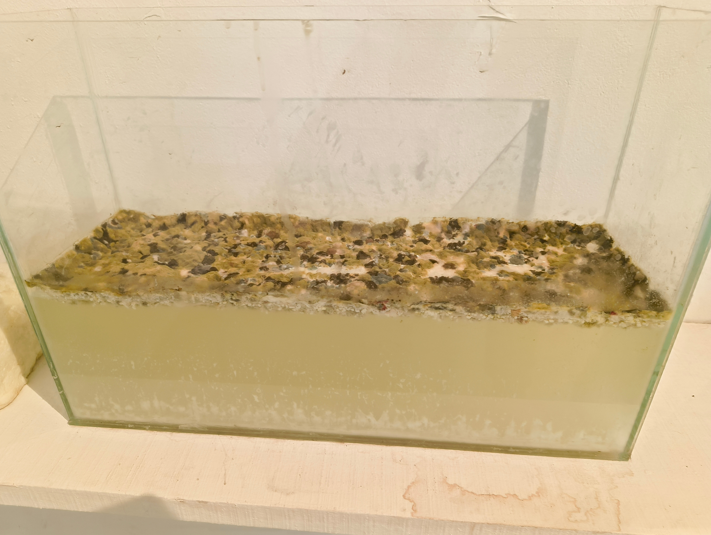
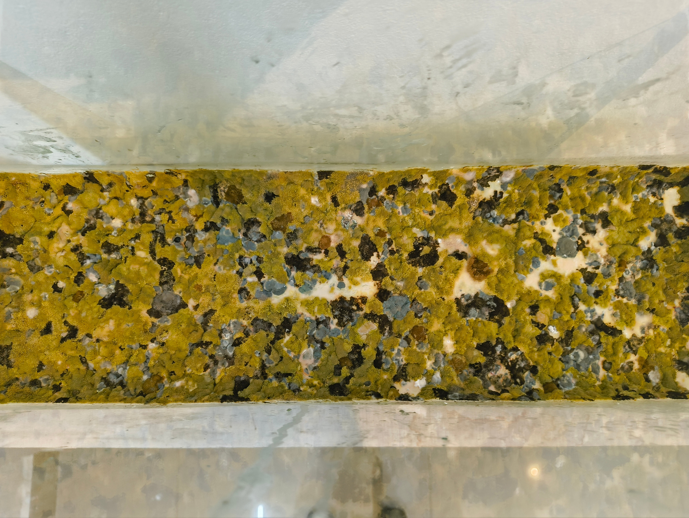

Concept Note:
Discarded university furniture is stripped of academic utility and exposed as an architecture of compliance. Red industrial netting, once bound to the artist's body, is removed and lashed onto the furniture. A looping audio of vehicular exhaust pushes the installation toward sensory and physical suffocation.




Concept Note:
By merging the figurative body directly with the unyielding materials of daily-wage construction - raw concrete, binding wire, and rusted rebar - the sculptures literalize the weight of architectural hostility. They capture the exact moment the city embeds itself into the subject. The organic form is shown restricted, pierced, and petrified by the mechanics of capital.



Concept Note:
The piece functions as a time-based performance of entropy. Over the course of the exhibition, the viewer witnesses the transformation of a "pristine" object into a toxic environment. The final state of the work - a tank of festering, colored mold - serves as a visceral counterpoint to the sterile imagery often used to depict climate change. It suggests that the future is not just empty; it is diseased.


